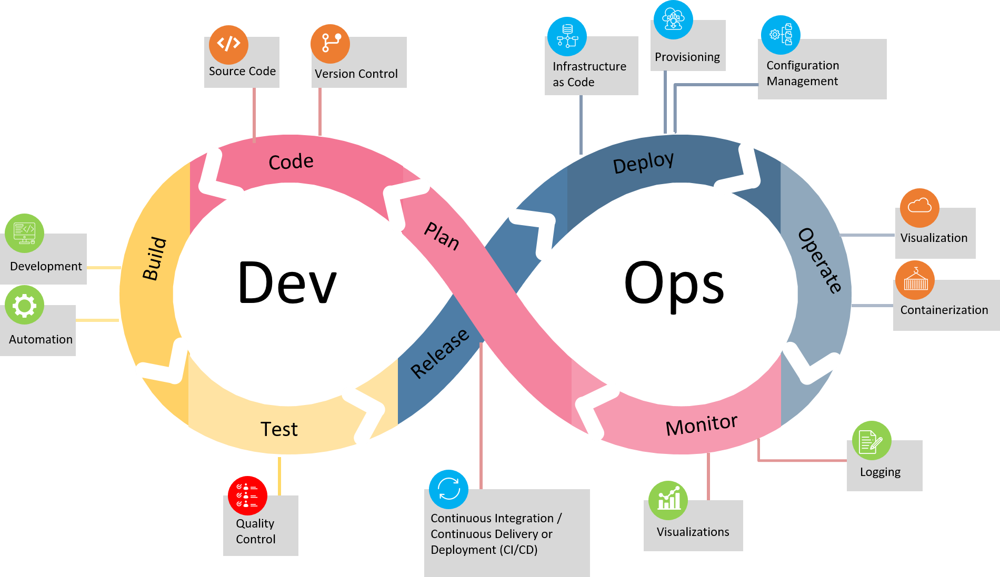

Formação: Cloud Computing & DevOps
Treinamento intensivo de 5 dias (40h)
📅 Acesse os Slides por Dia
Dia 1: Fundamentos de Cloud Computing
Dia 2: Controlo de Versão com Git e GitHub
Dia 3: Containerização com Docker
Dia 4: Infrastructure as Code com Terraform
Dia 5: Kubernetes e Integração DevOps